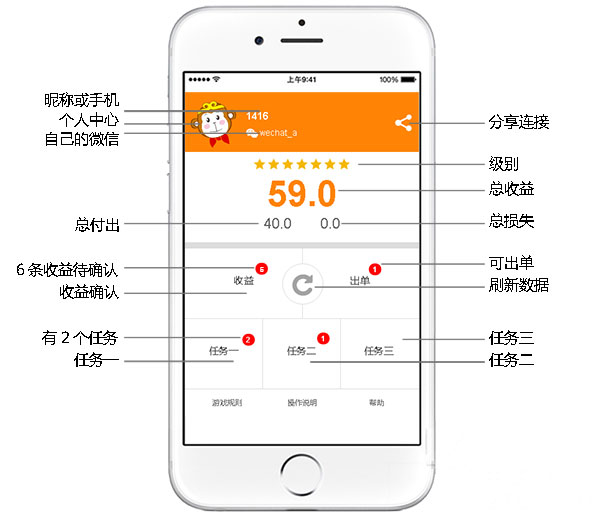

1.本游戏需要玩家邀请，方可参与。
2.注册时填写真实的手机号、微信号，填写密码。第一次登录系统点击“37互动”，和‘现在出单’，被对方确认后，才成为37互动（一级）玩家。
3.玩家的级别分七级。
4.玩家成为一级玩家后，要保持3天出单的习惯，并且推荐朋友参与互动，推荐人数越多就容易升级，完成该任务，级别升一级。
5.系统根据出单数量和推荐人数计算玩家的任务和收益。
6.出单就是向系统提示出的信息发指定金额的红包。
7.出单越多将得到的收益越多
8.最大出单间隔时间为77小时。如果超过77小时仍未成功出单，账户将被冻结
9.冻结后的48小时内为解冻期，在48小时内根据系统提示完成相应的任务，系统自动解冻。
10.在冻结期内无法获得收益。如果不解冻，该账户将被注销，且无法重新注册。
37互动主界面细节如下图：
用Chrome浏览器打开推荐人分享的连接，根据提示注册。细节如下图
推荐使用国际主流的Chrome 浏览器 打开 http://3737.io 登录
出单就是产生一个新的单子位置，位置越靠上级别越高。
任务是自己的某一个单子需要升级了，升级后可以确认自己单子下面的单子发起的任务(在自己的收益处查看)。
收益和别人的任务和出单直接相关，当自己的某个单子级别符合，就可以确认别人提交的任务。
在37互动主页面点击分享图标，再复制连接发送给对方。连接在12小时内有效。分享连接超时未注册成功，需要从新分享连接。
进入37互动主界面点击卡通猴头，进入修改信息，修改相应的信息后提交。
点击猴头，进入朋友圈，查看被推荐人的手机号和微信号！
可以将相关信息截屏，以投诉方式发送到platform3737@163.com，3737客服核查此事件，可以将对方级别降低或冻结一段时间或其它处罚。
是因为对方没有确认你的出单，所以不能消除，可以根据显示内容或电话催促对方审核。
请在在移动数据信号良好的环境中重试，或用Chrome浏览器尝试！
为考虑到安全问题，只提供邮箱找回密码！在登录界面下面点击“忘记密码”，根据提示操作。
不可以，48小时内完成任务，系统会在解冻期满后自动解冻。
不可以的。